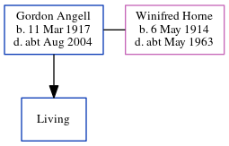

Bertram George Nott 1913 - c1985
[ Home ] | [ Calendar ] | [ Surnames Index ] | [ Errors ] | [ Family History ]Bertram Nott, the husband of Hilda Alice Horne (the first cousin twice-removed on the father's side of Nigel Horne), was born in Bromley, Kent, England on 19 Oct 19131,2,3. He married Hilda (a to shoe manufacturers clerk) in Paddington, London, England around Feb 19404. On 29 Sept 1939, he was living at 23 Addison Road in Bromley1.
He died c. Nov 1985 in Kensington, London, England3.
Citations
- 1939 Register - Findmypast (was recorded at this address)
- England & Wales births 1837-2006 - Findmypast
- England & Wales deaths 1837-2007 - Findmypast
- England & Wales Marriages 1837-2005 - Findmypast
Media
England & Wales marriages 1837-2005 - BMD/M/1940/1/AZ/001115/114
England & Wales deaths 1837-2007 - BMD/D/1985/10/75114909
1939 Register - TNA/R39/1239/1239C/021/20
England & Wales births 1837-2006 - BMD/B/1913/4/AZ/001086/067
Family Tree
Map
Generated by ged2site. Last updated on Jul 3, 2024
Known Issues
No records of living with anyone